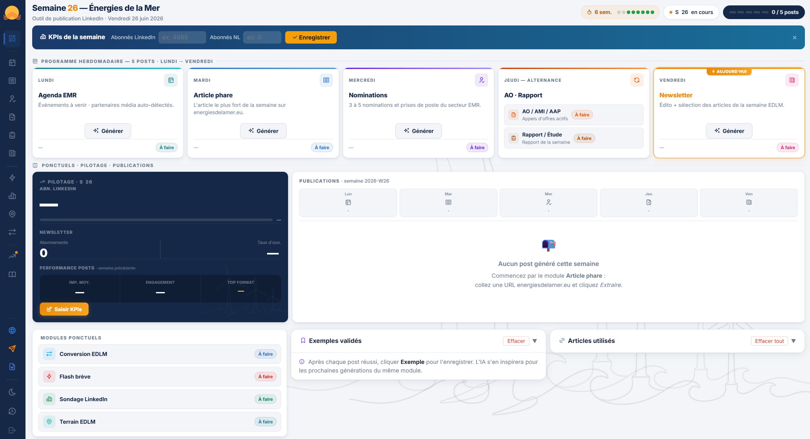
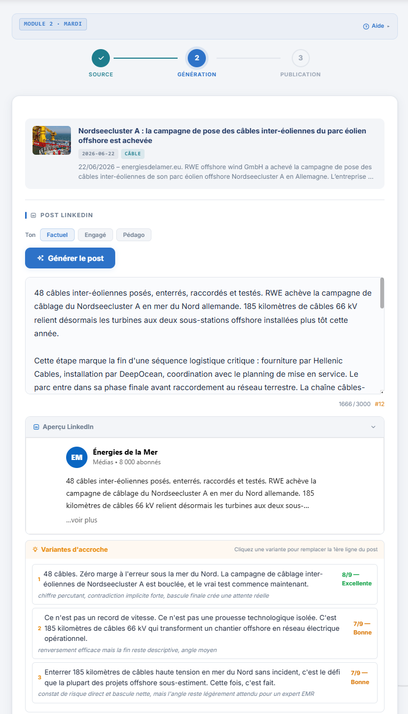
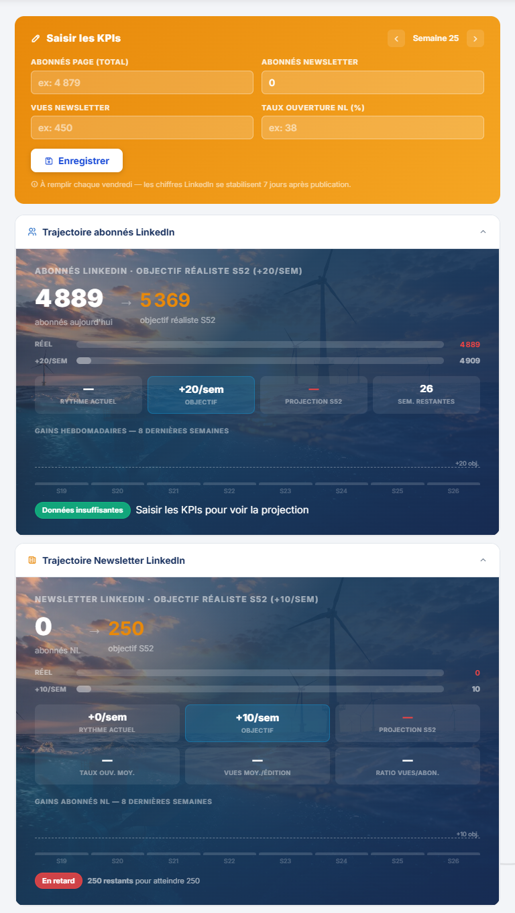

Article → LinkedIn : un post prêt en moins de 30 secondes
Une application sur mesure pour Énergies de la Mer, média des énergies marines renouvelables : 9 formats de posts LinkedIn, générés à partir des articles du site, relus puis publiés sans copier-coller.
L'essentiel
Énergies de la Mer publie 5 à 6 posts LinkedIn par semaine. Chacun demandait 20 à 40 minutes de rédaction, avec un ton qui variait d'un format à l'autre.


Ce que fait l'IA
- Transforme un article en post LinkedIn au format du client
- Propose 9 formats : article, nominations, appels d'offres, agenda…
- S'inspire des posts validés comme exemples
Ce qui reste humain
- Le rédacteur relit et ajuste dans l'éditeur
- Il choisit quand publier : jamais automatique
Ce que ça change
- Un post prêt en moins de 30 secondes
- Relecture et publication en 5 minutes
- Plus de copier-coller
- Un pilotage éditorial sur 12 semaines
Le détail, à ouvrir selon ce qui vous intéresse :
Pourquoi ce projet
Le contexte
EDLM est un média B2B indépendant spécialisé dans les énergies marines renouvelables : environ 4 900 abonnés LinkedIn, newsletter EMR Hebdo, site energiesdelamer.eu. LinkedIn compte autant pour son activité commerciale que pour sa ligne éditoriale.
La mission confiée à NorthIA : une application web qui couvre tout le circuit, de l'article WordPress au post LinkedIn publié dans Geckosocial, en moins de 30 secondes par post.
Captures d'écran

Vue d'accueil : programme hebdomadaire Lundi→Vendredi, pilotage KPIs, publications de la semaine et modules ponctuels TOFU/MOFU/BOFU.

Étape 2 : le post est généré depuis l'article WordPress. L'éditeur intégré affiche le compteur de caractères, l'aperçu LinkedIn et 3 variantes d'accroche scorées par l'IA.

Module Pilotage : saisie des KPIs hebdomadaires, trajectoire abonnés LinkedIn vers objectif S52, suivi newsletter (vues, taux d'ouverture, ratio vues/abonnés).
Comment ça marche
Les 9 formats
Chaque module correspond à un type de contenu précis avec ses règles, son ton, et son format LinkedIn adapté.
Le pilotage éditorial
Au-delà de la génération de posts, l'application embarque un tableau de bord éditorial complet, sans outil tiers.
Le pilotage suit semaine par semaine : nombre de posts produits par module, abonnés LinkedIn, portée estimée, taux d'engagement. Les données sont synchronisées dans Upstash Redis : on les retrouve depuis n'importe quel appareil, d'une session à l'autre.
Outils utilisés
| Composant | Technologie | Rôle |
|---|---|---|
| Backend | Node.js + Express | Serveur API, routage, orchestration des modules |
| Frontend | HTML/CSS/JS vanilla | Application d'une seule page, sans framework ni dépendance |
| IA génération | Claude API (Haiku + Sonnet) | Rédaction des posts selon les prompts métier EDLM |
| Publication | Geckosocial API | Envoi en brouillon LinkedIn depuis l'application |
| Contenu source | WordPress REST API | Extraction automatique des articles EDLM |
| Persistance | localStorage + Upstash Redis | Historique, KPIs, exemples validés, URLs utilisées |
| Hébergement | Vercel | Déploiement continu : chaque push part en production |
Résultats
Accès
Cette application est déployée en production pour Énergies de la Mer. L'accès public n'est pas ouvert pour protéger les données et le workflow éditorial du client.
✉ Demander une démo →